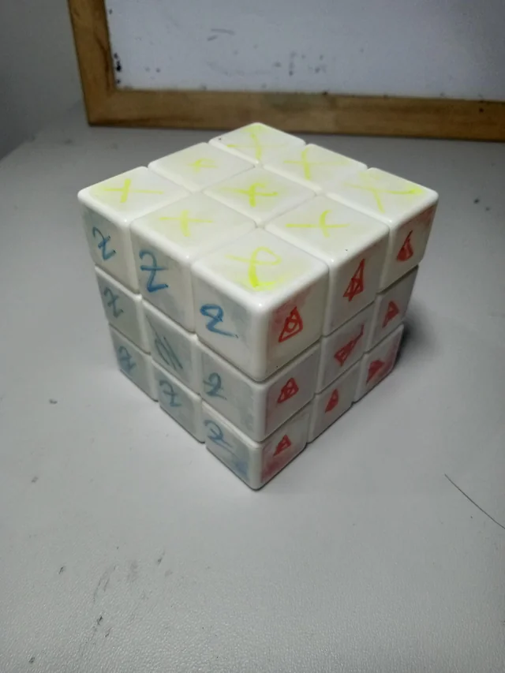

███╗░░░███╗░█████╗░████████╗███████╗██████╗░██╗░█████╗░██╗░░░░░ ░██████╗███████╗██╗░░░░░███████╗
████╗░████║██╔══██╗╚══██╔══╝██╔════╝██╔══██╗██║██╔══██╗██║░░░░░ ██╔════╝██╔════╝██║░░░░░██╔════╝
██╔████╔██║███████║░░░██║░░░█████╗░░██████╔╝██║███████║██║░░░░░ ╚█████╗░█████╗░░██║░░░░░█████╗░░
██║╚██╔╝██║██╔══██║░░░██║░░░██╔══╝░░██╔══██╗██║██╔══██║██║░░░░░ ░╚═══██╗██╔══╝░░██║░░░░░██╔══╝░░
██║░╚═╝░██║██║░░██║░░░██║░░░███████╗██║░░██║██║██║░░██║███████╗ ██████╔╝███████╗███████╗██║░░░░░
╚═╝░░░░░╚═╝╚═╝░░╚═╝░░░╚═╝░░░╚══════╝╚═╝░░╚═╝╚═╝╚═╝░░╚═╝╚══════╝ ╚═════╝░╚══════╝╚══════╝╚═╝░░░░░
'Cause we are living in a material world And I am a material girl
- Material Girl by Madonna, 1984.
This will either be the easiest or most likely the hardest one to master or change. Material wealth is one of the things we look at to see how we are in this world. People also have different perspective on how wealth is shown. I remember seeing a post in reddit, which in turn was stolen from 4Chan about how the Eastern European mind cannot fathom how Americans can buy land to have lawns but won't plant anything in them. In eastern europe, planting things in you garden is a normal thing but in the United States, if you try to plant something in your lawn, the HOA of that area will fine you down to your last cent and dignity.
That said, one is clearly wealthier than the other. The other one however just showboats their wealth without any real benefit. And that is the point that I would like to make. That Wealth is relative.
If you don't need it to survive, If it won't imrove or enrich your life. Then don't buy it. Notice I said enrich. If it's like an instrument like a guitar or piano, or a toy like a rubiks cube, or even a game (I have many example that I won't name for brevity sakes) that you know will absolutely make you learn and enjoy then go for it. Always analyze if it will benefit you, not just materially but emotionally.
Also don't go off buying or replacing, still functioning items. Wait until their tenure ends. That is when they break.
I own a fairly cheap rubiks Cube. It is noisy like heck, it turns as smooth as an old lady's hip, and the colors of the cube are literally fading. But I didn't bought a new one until I knew that I absolutely needed a new one (I lost a few pieces when it exploded in my hands one time).
My old Rubik's cube, RIP
Disclosure of Bias
I grew up fairly poor. Not poor that I lived on the street, but poor enough that sometimes you just ate what was at the table since it's the only thing you had and will have on that day. I had to adapt to a mindset of, making the most of things cos you had no choice.
That said it's not a totally bad mindset to have (As long as you don't overdue it). Take a moment to think the next time your buying something and ask your self, Do I need this? Do I want this because it looks cool/entertaining, or because it wil benefit me in the long run?
The decision if up to you. Money like time is just another resource. Invest it in things that will spark joy in you. But try to find joy in things that are not just in material form. Sometimes that void within is filled with something else.